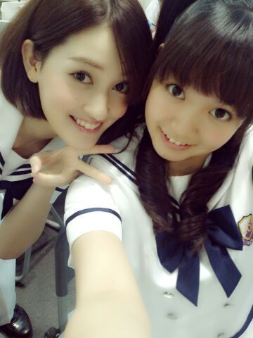
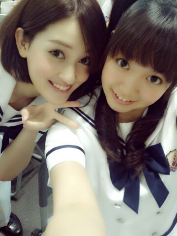

| 2013/07 23 Tue | ひめたん(*>ω<*)そ の317 |
京都全握ありがとうございました！

握手はせっちゃんとぺあでした(〃ω〃)初！
せっちゃんふぁんのみなさま
仲良くしてくださって
ありがとうございました☆
ひめきゅんさんもいつもありがとう！
ひめきゅんさんたち来てくれて
安心したよー
せっちゃんといると
ふわふわモードになって和みましたんっ
癒しやね。せちゃーんありがとう！
ライブのセトリ
ガールズルール
扇風機
他の星から
コウモリよ
世界で一番孤独なLover
扇風機は、みなさんが
あーってゆってくださって高まった(*^ω^*)
乃木どこ効果かな。楽しかったよー！
コウモリよ は、スタッフさんブログに
ひめたんのタオル持ってる写真載ってますが
あんな感じでしたー
サイリウムいっぱーいで
ステージからみてもキラキラだったよー
でも周りの方とぶつかんないように
気を付けてね(´・ω・｀)
そしてゆったんのサプライズ生誕祭も
大成功ってことでね！
びば京都！
美容院いったー
ワントーン落としてみたよー♪
いつものごとく写め撮るの忘れたよ(´・ω・｀)
みんな！想像してみてね！

握手はせっちゃんとぺあでした(〃ω〃)初！
せっちゃんふぁんのみなさま
仲良くしてくださって
ありがとうございました☆
ひめきゅんさんもいつもありがとう！
ひめきゅんさんたち来てくれて
安心したよー
せっちゃんといると
ふわふわモードになって和みましたんっ
癒しやね。せちゃーんありがとう！
ライブのセトリ
ガールズルール
扇風機
他の星から
コウモリよ
世界で一番孤独なLover
扇風機は、みなさんが
あーってゆってくださって高まった(*^ω^*)
乃木どこ効果かな。楽しかったよー！
コウモリよ は、スタッフさんブログに
ひめたんのタオル持ってる写真載ってますが
あんな感じでしたー
サイリウムいっぱーいで
ステージからみてもキラキラだったよー
でも周りの方とぶつかんないように
気を付けてね(´・ω・｀)
そしてゆったんのサプライズ生誕祭も
大成功ってことでね！
びば京都！
美容院いったー
ワントーン落としてみたよー♪
いつものごとく写め撮るの忘れたよ(´・ω・｀)
みんな！想像してみてね！

 サッカー見てる？
サッカー見てる？
応援してますよー
運動する方みんなかっこいい(*^ω^*)
握手会に一回来た人のことって
別の日に握手会行っても覚えてるー？
覚えてますよー♪
ひめきゅんさんのおかお見ると
ほっとします///
握手会に来てくれる人のコメントは、
その人の顔が思い浮かびますか？？
もちろーん∩^ω^∩
だからコメント読むのはお話ししてるみたいで
楽しいんだよーいつもありがとー！
男子で「君に届け」の漫画
集めてるんやけど...あり？
アリだと思うよ！
ひめたんの周りにも多分いるよー( ^ω^ )
ひめたんにもかーしーてー♪
「このメンバーのこんなところが好き！」
っていうのを教えてほしいです。
みんな好きなとこあるからなー
逆に「このメンバーの！」って
指名してくださったら嬉しいかなー＊
将来お嫁さんになったら、
どんなお嫁さんになりたい？
どんな旦那さんであって欲しいかな？
お料理はもう諦めているので(´・ω・｀)
それ以外なら全力で、何でもやるよー！
そして甘えさせてほしいですー///
ひめたんの長所と短所は何ですか？
長所はなんだろねー
ひめたんの長所ってなにー誰かー
短所はあげだしたらキリないけど
自分に弱いとこかなー...
先日プロポーズしました(・∀・)大成功!!!
お祝いくれませんか??
にゃー！おめでとー！
ひ、ひめたんはさささ寂しいけど
んでもお幸せにね(´;ω;｀)うーぐすっ
お祝いですかーそうですか
何が欲しいですか。びーむかな。
めざましライブは
ひめたんも出ますよー＼( ^O^ )／
暑いかなーと思うけどよかったら！
そして指の腹をケガしたー
手ー洗うの痛いよー
でも負けないよー☆

手洗うのは頑張れるけど
字はいつもより汚いかも...どうかなー
でも丁寧に書いたつもりだよーごめんね。
(＊´・ω・＊)
コメント(247)
2013/07/23 22:06